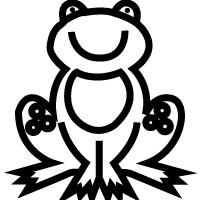
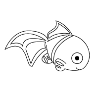

Tip: Drag your finger or move your mouse fast to get a more "spaced out," effect.
Brush Size
Current Size:
2
Colors
 Tap a square below to change the brush color.
Tap a square below to change the brush color.
Current Color:
black
Coloring Pages
- 
- 
Interactive Project by John Smicklo, Web & Interactive/Multimedia Technologies